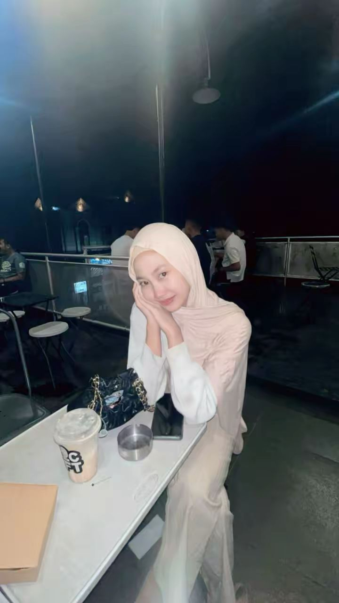

Pelajar SMKS Yannas Husada Bangkalan
| Nama | Ulfiatus Zahra |
| Sekolah | SMKS Yannas Husada Bangkalan |
| Kelas | XB |
| Hobi | Memasak |
| Cita-cita | Menjadi Chef Profesional |
| Motto Hidup | "Kesuksesan dimulai dari usaha dan doa." |
Halo, perkenalkan nama saya Ulfiatus Zahra. Saya merupakan siswi kelas XB di SMKS Yannas Husada Bangkalan. Saya memiliki hobi memasak karena saya senang mencoba berbagai resep makanan dan minuman. Bagi saya, memasak bukan hanya kegiatan sehari-hari, tetapi juga cara untuk berkreasi dan menghasilkan sesuatu yang bermanfaat. Saya bercita-cita menjadi seorang chef profesional yang dapat membuka usaha kuliner sendiri dan membanggakan keluarga.